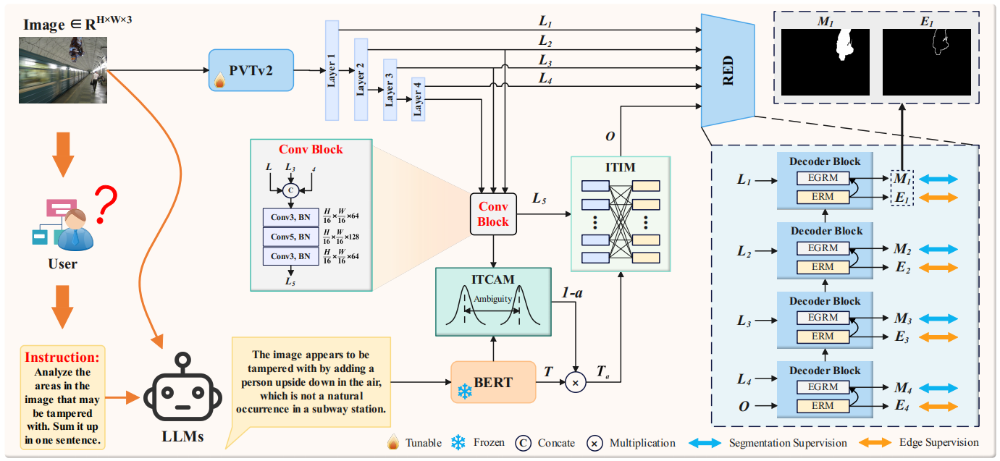

Bridging Semantic Logic Gaps:A Cognition Inspired Multimodal Boundary Preserving Network for Image Manipulation Localization

Bridging Semantic Logic Gaps: A Cognition Inspired Multimodal Boundary Preserving Network for Image Manipulation Localization
Songlin Li, Zhiqing Guo*, Yuanman Li, Zeyu Li, Yunfeng Diao, Gaobo Yang, and Liejun Wang
摘要
现有的图像篡改检测（IML）模型主要依赖视觉线索，却忽视了内容特征间的语义逻辑关联。事实上，真实图像传递的内容语义往往符合人类认知规律。然而图像篡改技术通常会破坏内容特征间的内在关联，导致语义线索难以被
IML
识别。
本文提出一种认知启发式多模态边界保留网络（CMB-Net，cognition
inspired multimodal boundary preserving
network）。具体而言，CMB-Net利用大语言模型（LLMs）分析图像中的篡改区域，并生成基于提示的文本信息以弥补视觉信息中语义关联的缺失。考虑到由LLMs幻觉诱导的错误文本会损害
IML 准确性，我们提出图像-文本中心模糊模块（ITCAM，image-text
central ambiguity
module），通过量化文本与图像特征间的模糊度为文本特征赋予权重，从而确保文本信息的积极作用。同时提出图像-文本交互模块（ITIM，image-text
interaction
module），利用相关矩阵实现视觉与文本特征的精细交互。最后，受可逆神经网络启发，我们提出恢复边缘解码器（RED，restoration
edge
decoder），通过双向生成输入与输出特征来无损保留篡改区域的边界信息。大量实验表明，CMB-Net在性能上超越了大多数现有
IML
模型。
我们的代码可在以下平台获取：https://github.com/vpsg-research/CMB-Net
模型架构
- 整体框架：CMB-Net以PVTv2作为视觉编码器，BERT作为文本编码器，包含ITCAM、ITIM和RED三个核心模块。首先，LLMs分析图像潜在篡改区域生成提示文本，经BERT提取文本特征；PVTv2提取图像多级特征，生成高层语义表示后与文本特征输入ITCAM加权，再经ITIM交互融合，最后通过RED生成预测掩码。
- 图像-文本中心模糊模块（ITCAM）：为解决LLMs幻觉导致的文本错误问题，该模块利用KNN技术构建图像和文本的中心特征，通过KL散度量化两者模糊度。先将图像特征重塑并计算自相关特征图，用KNN选择近邻特征构建差异加权特征，经卷积和池化提取图像中心特征，同理获取文本中心特征；再将中心特征建模为高斯分布，计算对称KL散度平均值得模糊度a，以（1-a）加权文本特征，减少幻觉影响。
- 图像-文本交互模块（ITIM）：为实现视觉与文本特征细粒度交互，该模块通过1×1卷积将图像特征转换为查询、键、值，文本特征转换为键和值，计算图像区域相似度和图像-文本相似度，生成相关系数矩阵CS；结合可学习缩放参数调整相似度特征，最终融合图像和文本的加权表示，增强模型对复杂语义关系的理解。
- 恢复边缘解码器（RED）：为防止多尺度特征融合中边界信息稀释，RED包含四个解码器块（DB），每个DB有边缘引导残差模块（EGRM）和边缘细化模块（ERM）。ERM采用可逆神经网络，通过仿射耦合层对特征可逆变换，生成边界图Ei；EGRM将Ei注入特征融合过程，经卷积和激活等操作生成预测图Mi，实现边界信息无损保留。

图2展示了CMB-Net的整体架构。
> 该模型采用PVTv2[9]作为视觉编码器，BERT[10]作为文本编码器，并包含三个核心模块：图像-文本中心模糊模块（ITCAM）、图像-文本交互模块（ITIM）以及边缘恢复解码器（RED）。值得注意的是，RED由四个解码器模块（DB）构成，每个DB包含两个组件：边缘引导残差模块（EGRM）和边缘精炼模块（ERM）。
实验设计
数据集：实验使用多个主流IML基准数据集，包括CASIAv2（5123张，仅训练）、CASIAv1（920张，仅测试）、Coverage（100张，70训练30测试）、Columbia（180张，130训练50测试）、NIST16（564张，414训练150测试），还在CocoGlide、ITW、Korus、IMD2020等数据集验证泛化能力。
评估指标：采用F1分数和IoU作为评估指标，F1是精确率和召回率的调和平均，IoU评估预测掩码与真实掩码相似度，阈值设为0.5。
实现细节：训练时输入图像 resize 为512×512，批大小32，使用AdamW优化器，初始学习率1e-4，每50 epoch衰减0.1，训练120 epoch，使用4块NVIDIA 3090 GPU。
对比方法：与MVSS-Net、PSCC-Net、TruFor、IML-ViT、MFI-Net、PIM-Net、SparseViT、Mesorch等8种现有SOTA方法对比，还对比了使用GPT-4.1和Qwen-VL-Max生成文本的模型性能。
| :----: | :----: | :----:|:----: | :----: | :----: | :----: |
CASIAv2.0 | 5123 | 3295 |1828 | 0 | 5123 | 0 |
CASIAv1.0 | 920 | 459 |461 | 0 | 0 | 920 |
Coverage | 100 | 100 |0 | 0 | 70 | 30 |
Columbia | 180 | 0 |180 | 0 | 130 | 50 |
NIST16 | 564 | 68 |288 | 208 | 414 | 150 |
结果与分析
- 与SOTA方法对比：CMB-Net在多个数据集上F1和IoU指标均优于对比方法。使用Qwen-VL-Max文本时，NIST16的F1为0.935、IoU为0.891，Coverage的F1为0.875、IoU为0.812，CASIAv1的F1为0.779、IoU为0.729，Columbia的F1和IoU均为0.986、0.972，平均F1 0.894、IoU 0.851。Qwen-VL-Max生成的文本比GPT-4.1更精炼，语义更丰富，使模型性能更优。
- 消融实验：仅图像特征（B）时平均F1 0.660、IoU 0.601；加入RED后平均F1 0.850、IoU 0.800；再加入ITIM平均F1 0.875、IoU 0.830；加入ITCAM（完整模型）平均F1 0.894、IoU 0.851，表明各模块均提升性能，ITCAM效果最显著。
- ITCAM中k值选择：在k=5、7、10、12、15的实验中，k=10时模型在多个数据集上综合性能最优，平衡了局部细节和全局结构。
- 鲁棒性评估：在Facebook、WeiBo、WeChat、WhatsApp等社交平台图像压缩场景及 resize、高斯噪声、高斯模糊、JPEG压缩等攻击下，CMB-Net整体表现优于对比方法，仅在强高斯模糊（k=11）时略逊于Mesorch。
- 域外数据集测试：在IMD2020、CocoGlide、ITW、Korus等域外数据集上，CMB-Net仍表现出强泛化能力，验证了文本信息补充语义逻辑的有效性。
总体结论
CMB-Net通过利用LLMs生成文本补充视觉语义关系，结合ITCAM量化图像-文本模糊度减轻幻觉影响，ITIM实现跨模态细粒度交互，RED基于可逆神经网络保留边界信息，显著提升了图像篡改定位性能。实验表明，CMB-Net在多个数据集上超越现有SOTA方法，且具有良好的鲁棒性和泛化能力，为图像篡改定位领域提供了新的有效思路。